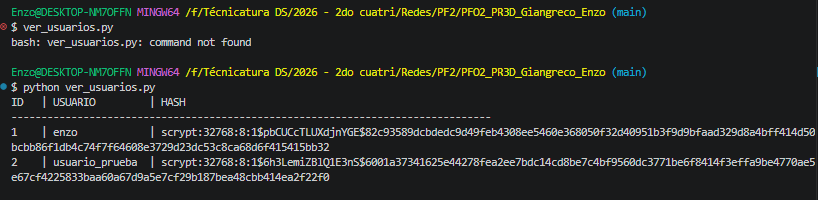
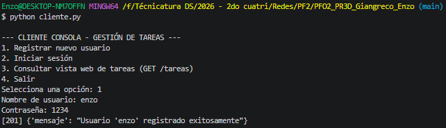
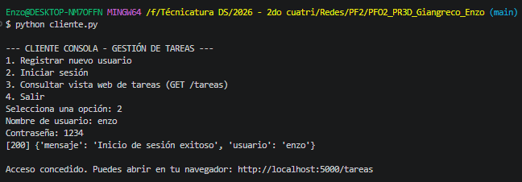
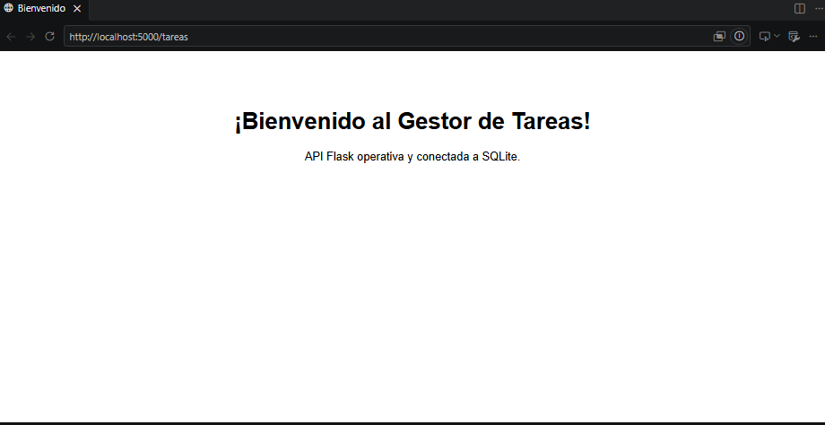

Materia: Programación sobre Redes | API REST + SQLite + Autenticación Segura
/registro: Recibe credenciales en formato JSON, aplica hashing criptográfico y persiste el registro en SQLite./login: Valida las credenciales enviadas comparándolas de forma segura con el hash persistido./tareas: Retorna la vista HTML de confirmación de operatividad del sistema.Para garantizar la irreversibilidad. Un algoritmo criptográfico de hash convierte la clave en una cadena alfanumérica fija que no se puede desencriptar matemáticamente. Si la base de datos se viera comprometida, el atacante no obtiene las contraseñas reales. Además, al aplicar salt aleatorio, contraseñas idénticas producen hashes distintos, anulando ataques con tablas precalculadas (Rainbow Tables).
tareas.db.sqlite3 integrado en la biblioteca estándar de Python.
La aplicación implementa werkzeug.security.generate_password_hash, aplicando un esquema con salt dinámico. En la base de datos nunca se almacena la contraseña original:
| Usuario | Entrada (Texto Plano) | Persistencia Real en SQLite (Hash) |
|---|---|---|
| enzo | 1234 |
scrypt:32768:8:1$pbCUCcTLUXdjnYGE$82c93589dcbdedc9d49feb4308ee5460e368050f32d40951b3f9d9bfaad329d8a4bff414d50bcbb86f1db4c74f7f64608e3729d23dc53c8ca68d6f415415bb32 |
| usuario_prueba | claveSegura2026 |
scrypt:32768:8:1$6h3LemiZBlQ1E3nS$6001a37341625e44278fea2ee7bdc14cd8be7c4bf9560dc3771be6f8414f3effa9be4770ae5e67cf4225833baa60a67d9a5e7cf29b187bea48cbb414ea2f22f0 |
Inspección visual del archivo tareas.db:

1. Prueba de Registro (POST /registro):

2. Prueba de Inicio de Sesión (POST /login):

3. Consulta Web (GET /tareas):
